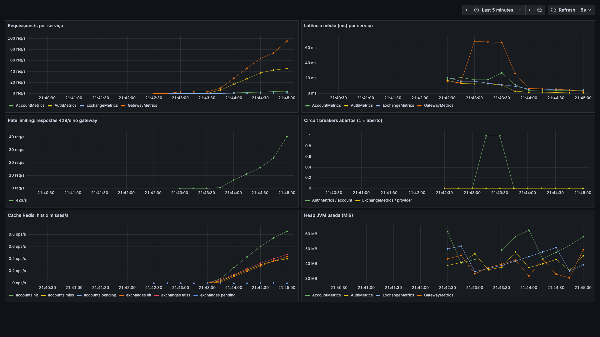

Bottlenecks
A página Bottlenecks da disciplina lista gargalos típicos e suas mitigações. Implementamos seis,
pelo menos um em cada serviço, todos validados ao vivo no docker compose (as saídas abaixo
são das execuções reais):
| # | Bottleneck (tabela da disciplina) | Onde | Mitigação | Evidência |
|---|---|---|---|---|
| 1 | Caching | account, exchange | Redis + Spring Cache (@Cacheable/@CacheEvict), TTL |
chaves no Redis, cache_gets_total{result="hit"} |
| 2 | Resiliência (circuit breaker + retry) | auth → account, exchange → AwesomeAPI | Resilience4j | circuito OPEN, 503 em ~5 ms, volta a CLOSED |
| 3 | Load balancing / proteção (rate limiting) | gateway | RequestRateLimiter (token bucket no Redis) |
150 de 300 requisições → 429 |
| 4 | Observability | todos | Actuator + Micrometer → Prometheus → Grafana | 4 targets UP, dashboard provisionado |
| 5 | Vulnerability scanning | CI de todos os serviços | Trivy na imagem publicada | relatório HIGH/CRITICAL em cada build |
| 6 | Load balancing / escala horizontal | Kubernetes | Service + HPA (CPU 50 %) + ELB | Teste de carga |
Destaques por integrante
A entrega pede pelo menos 2 bottlenecks em destaque por integrante. A dupla tem 6; cada um apresenta e defende os seus:
| Integrante | Bottlenecks em destaque | Onde ver |
|---|---|---|
| Miguel Damásio | 3. Rate limiting no gateway (token bucket no Redis → 429) e 4. Observabilidade (Prometheus + Grafana, dashboard Store — Bottlenecks) |
§ 3, § 4 |
| Enzo Canavero | 1. Cache Redis (account e exchange) e 2. Circuit breaker + retry (auth → account, exchange → AwesomeAPI) | § 1, § 2 |
| Dupla | 5. Vulnerability scanning (Trivy no CI) e 6. Escala horizontal (HPA + Service + ELB) | § 5, § 6 |

Dashboard provisionado (setup/grafana), com o compose local sob carga em 16/11/2026: req/s e
latência por serviço, 429 do rate limiting, o circuito auth → account abrindo (account
parado) e hits/misses do cache Redis.
1. Cache Redis (account e exchange)
Problema. Toda requisição autenticada a /auth/me faz o auth chamar GET /accounts/{id},
que vai ao PostgreSQL; e todo GET /exchanges/{from}/{to} iria à AwesomeAPI — uma API externa,
lenta (centenas de ms) e com limite de uso. Com o gateway escalando para várias réplicas, um
cache local (por JVM) não seria compartilhado.
Solução. Cache-aside com Redis compartilhado (hands-on 8): spring-boot-starter-data-redis
+ spring-boot-starter-cache, @EnableCaching, spring.cache.type: redis.
| Cache | Chave | TTL | Invalidação |
|---|---|---|---|
accounts |
accounts::<id> |
5 min | @CacheEvict no DELETE /accounts/{id} |
exchanges |
exchanges::USD-BRL |
60 s | expira (cotação muda) |
// AccountService
@Cacheable(value = "accounts", key = "#id", unless = "#result == null")
public Account findById(String id) { ... }
@CacheEvict(value = "accounts", key = "#id")
public void delete(String id) { ... }
// ExchangeService — o cache fica por fora do retry/circuit breaker:
// um hit nem chega a chamar a API externa
@Cacheable(value = "exchanges", key = "#from + '-' + #to")
@Retry(name = "provider", fallbackMethod = "unavailable")
@CircuitBreaker(name = "provider")
public Rate rate(String from, String to) { ... }
Decisões:
- Redis é opcional: um
LoggingCacheErrorHandlerfaz o serviço apenas logar e seguir para o banco/API se o Redis cair; o health do Redis foi desligado das probes (management.health.redis.enabled: false) para o pod não ficar unready por causa do cache. Timeouts curtos (500 ms) evitam travar threads. - Objetos cacheados (
Account,Rate) sãoSerializable(serializador JDK padrão do Spring Data Redis, sem configuração extra). cache-names+enable-statistics: truepublicamcache_gets_total{result="hit|miss"}no Prometheus.
Evidência (após o smoke test, que lê a mesma conta duas vezes):
$ docker compose exec redis redis-cli --scan
exchanges::USD-BRL
accounts::7586833b-189d-4f47-a27d-0cf8589a8b3b
$ curl -s account:8080/accounts/actuator/prometheus | grep cache_gets_total
cache_gets_total{cache="accounts",result="hit"} 2.0
cache_gets_total{cache="accounts",result="miss"} 1.0
cache_gets_total{cache="exchanges",result="miss"} 2.0
2. Circuit breaker e retry (auth e exchange)
Problema. Chamadas síncronas em cadeia propagam falhas: se o account ou a AwesomeAPI ficam
lentos/fora, cada requisição segura uma thread até o timeout, o pool esgota e o serviço que
chama também cai (falha em cascata — aula Reliability patterns).
Solução. Resilience4j (resilience4j-spring-boot4 + spring-boot-starter-aspectj):
resilience4j.circuitbreaker.instances.account:
sliding-window-size: 10
minimum-number-of-calls: 5
failure-rate-threshold: 50 # >= 50 % de falhas -> OPEN
slow-call-duration-threshold: 1500ms
wait-duration-in-open-state: 15s # OPEN -> HALF_OPEN
permitted-number-of-calls-in-half-open-state: 3
record-exceptions: # só falhas de infraestrutura contam
- feign.RetryableException # conexão recusada / timeout
- feign.FeignException$FeignServerException # 5xx
@CircuitBreaker(name = "account", fallbackMethod = ...) em create, login e me.
O fallback traduz: 4xx do account passa adiante (400/401/404/409) e falha de rede/5xx/circuito
aberto vira 503. Credencial errada (401) não conta como falha. Timeouts do Feign:
1 s de conexão, 2 s de leitura.
resilience4j:
retry.instances.provider:
max-attempts: 3 # 1 + 2 tentativas
wait-duration: 300ms
enable-exponential-backoff: true # 300 ms, 600 ms
retry-exceptions: [ResourceAccessException, HttpServerErrorException]
ignore-exceptions: [CallNotPermittedException] # circuito aberto: não insiste
circuitbreaker.instances.provider:
minimum-number-of-calls: 5
failure-rate-threshold: 50
wait-duration-in-open-state: 30s
record-exceptions: [ResourceAccessException, HttpServerErrorException, TooManyRequests]
Ordem padrão do Resilience4j: Retry( CircuitBreaker( chamada ) ); o fallback fica no
@Retry (camada externa) para rodar uma única vez — como na aula. Timeouts do RestClient:
2 s de conexão, 3 s de leitura.
Evidência 1 — account fora do ar (docker compose stop account):
login #1 -> 503 em 0.052821s
login #2 -> 503 em 0.005793s
...
login #8 -> 503 em 0.004062s
{"state":"OPEN","failureRate":"50.0%","notPermittedCalls":3} # /auth/actuator/circuitbreakers
# docker compose start account; após 15 s (HALF_OPEN) as chamadas de teste passam:
login #1..#4 -> 200
{"state":"CLOSED","failureRate":"-1.0%"}
Evidência 2 — API de terceiros fora do ar (EXCHANGE_PROVIDER_URL=http://redis:6380 docker compose up -d exchange):
EUR/BRL #1 -> 503 em 1.183456s # 3 tentativas com backoff
EUR/BRL #2 -> 503 em 0.934587s # 3 tentativas -> 6 falhas na janela -> OPEN
EUR/BRL #3 -> 503 em 0.023458s # circuito aberto: falha rápida, sem chamar a API
...
EUR/BRL #8 -> 503 em 0.008064s
{"state":"OPEN","failureRate":"100.0%"}
Sem o padrão, cada chamada seguraria a thread pelos timeouts (até 2 s × 3 tentativas). Com ele,
a falha custa ~10 ms e a API externa ganha tempo para se recuperar. O estado também é exportado
como resilience4j_circuitbreaker_state (painel no Grafana).
3. Rate limiting (gateway)
Problema. Um cliente (ou robô) pode inundar o gateway e, através dele, o auth, o account e o banco. O gateway é o lugar certo para cortar o excesso, antes de qualquer trabalho.
Solução. Filtro RequestRateLimiter do Spring Cloud Gateway com RedisRateLimiter
(token bucket, aula Reliability patterns): 50 req/s de reposição e rajada de 100 por IP
de origem; acima disso, 429 Too Many Requests. O estado fica no Redis, então o limite vale
para o conjunto de réplicas do gateway (não por pod). Configurável por RATE_LIMIT_REPLENISH /
RATE_LIMIT_BURST.
default-filters:
- name: RequestRateLimiter
args:
key-resolver: "#{@ipKeyResolver}" # bean: IP de origem
redis-rate-limiter.replenishRate: ${RATE_LIMIT_REPLENISH:50}
redis-rate-limiter.burstCapacity: ${RATE_LIMIT_BURST:100}
Os endpoints próprios do gateway (/health-check, /info, actuator) não passam pelo filtro
de rota — por isso o teste de carga do HPA usa /info. Se o Redis cair, o rate limiter libera as
requisições (fail-open) em vez de derrubar a API.
Evidência — 300 requisições, 50 em paralelo:
$ seq 300 | xargs -P 50 -I{} curl -s -o /dev/null -w '%{http_code}\n' localhost:8080/auth/logout | sort | uniq -c
150 200
150 429
As respostas trazem X-RateLimit-Remaining, X-RateLimit-Burst-Capacity e
X-RateLimit-Replenish-Rate.
Limitação conhecida
Atrás do Classic Load Balancer (modo TCP) o IP de origem visto pelo pod é o do nó, então o
limite vira praticamente global. Com o ALB (Ingress) daria para usar o X-Forwarded-For
confiável do balanceador como chave.
4. Observabilidade (Prometheus + Grafana)
Todos os serviços têm spring-boot-starter-actuator + micrometer-registry-prometheus, com o
endpoint sob o prefixo do serviço (/gateway/actuator/prometheus, /auth/..., /accounts/...,
/exchanges/...), como no hands-on 6. O compose sobe Prometheus (scrape a cada 5 s) e
Grafana com datasource e um dashboard "Store — Bottlenecks" provisionados por arquivo
(setup/grafana/provisioning), sem configuração manual:
| Painel | PromQL |
|---|---|
| Requisições/s por serviço | sum by (job) (rate(http_server_requests_seconds_count[1m])) |
| Latência média (ms) | 1000 * sum by (job) (rate(..._sum[1m])) / sum by (job) (rate(..._count[1m])) |
| 429/s no gateway | sum(rate(http_server_requests_seconds_count{job="GatewayMetrics",status="429"}[1m])) |
| Circuit breakers abertos | max by (job, name) (resilience4j_circuitbreaker_state{state="open"}) |
| Cache hits × misses | sum by (cache, result) (rate(cache_gets_total[1m])) |
| Heap da JVM | sum by (job) (jvm_memory_used_bytes{area="heap"}) |
$ curl -s localhost:9090/api/v1/targets | jq -r '.data.activeTargets[] | "\(.labels.job) \(.health)"'
AccountMetrics up
AuthMetrics up
ExchangeMetrics up
GatewayMetrics up
Grafana: http://localhost:3000 (admin/admin) → Dashboards → Store → Store — Bottlenecks.
No Kubernetes, as probes de liveness/readiness usam os health groups do Actuator, e o
metrics-server alimenta o HPA.
5. Vulnerability scanning (Trivy no CI)
Cada push em main de um serviço publica a imagem e roda o Trivy sobre ela
(aquasec/trivy image --severity HIGH,CRITICAL). O relatório aparece no log do job
Imagem (ECR ou Docker Hub, scan); está configurado para não bloquear (--exit-code 0) —
trocar para 1 transforma o scan em gate. No ECR, os repositórios também têm scan on push
(aws ecr describe-image-scan-findings --repository-name gateway-service --image-id imageTag=latest). Outras escolhas que reduzem superfície de ataque:
imagem base JRE (sem compilador), segredos fora do código (Secrets do Kubernetes / GitHub),
permissions: contents: read nos workflows, e o header id-account só pode vir do gateway.
6. Escala horizontal e balanceamento (HPA + Service + ELB)
O gateway roda atrás de um Service LoadBalancer (ELB da AWS, subnets públicas) que
distribui entre as réplicas nas subnets privadas; os demais serviços são ClusterIP. Cada
serviço tem um HPA por CPU (50 % do request): gateway 1–10 réplicas, demais 1–3. Como o
estado de sessão está no JWT e o estado compartilhado (cache, rate limit) no Redis, qualquer
réplica atende qualquer requisição. A demonstração está em Teste de carga.